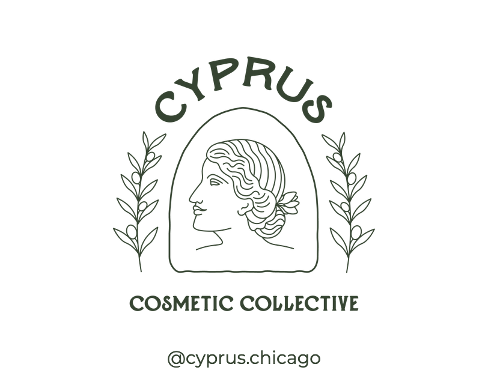

i'm having top surgery on the last day of finals week (~one week from today!) so in addition to the mountain of writing and coding i have been tasked with in the coming days, i must also answer the age old questions: do i need nipples? do i want nipples? and if so, through which method should i obtain them? free nipple grafts? tattoos? sheer willpower?
ultimately, the decision is personal and must be reflected on and researched individually. however, in my own research on 3D paramedical nipple tattooing, i found that the majority of resources weren't geared towards trans people and i ended up spending a lot of time digging around for explicitly queer friendly artists. in the off chance that someone in a similar situation finds this in the future, i figured that i would replant the artists i find here. i'm rooting for you.

Chandler Mihalik offers 3D areola restoration, areola regimentation, and gender affirming areola restoration. her portfolio includes both feminine and masculine chests.